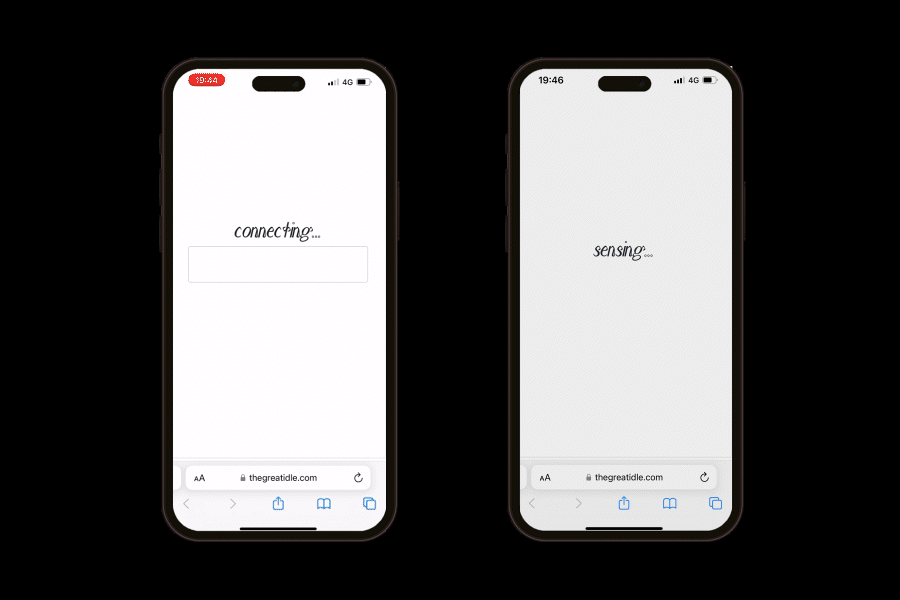
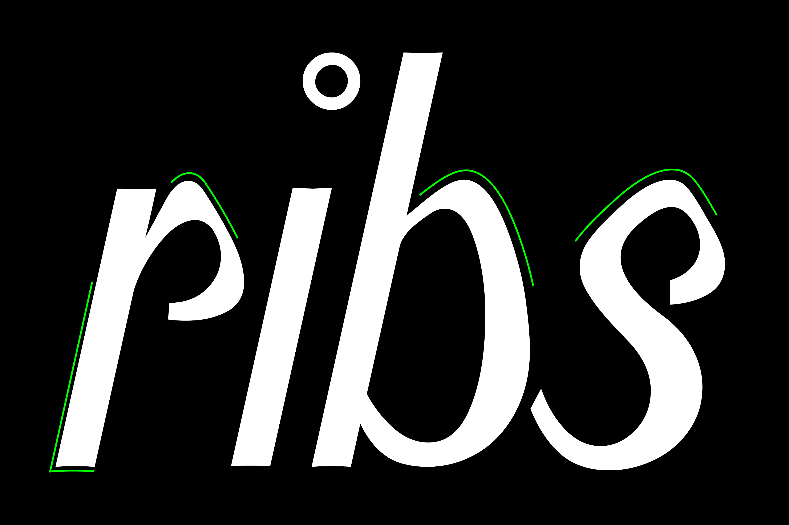
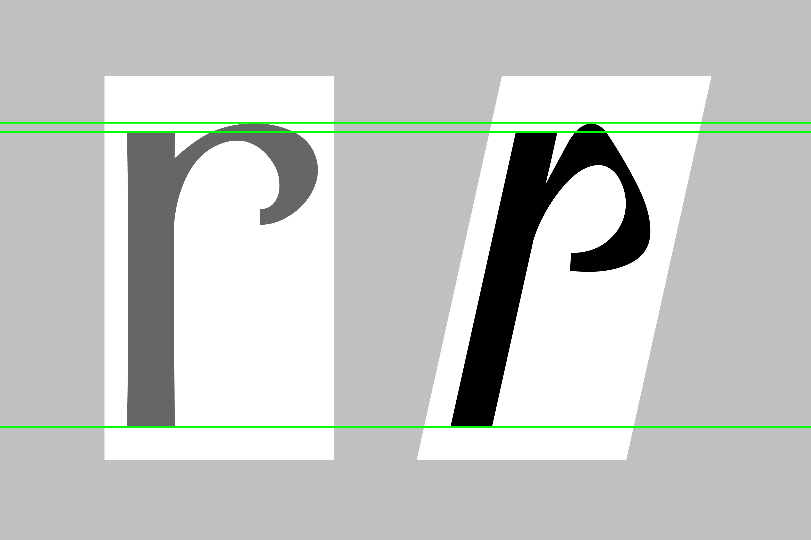
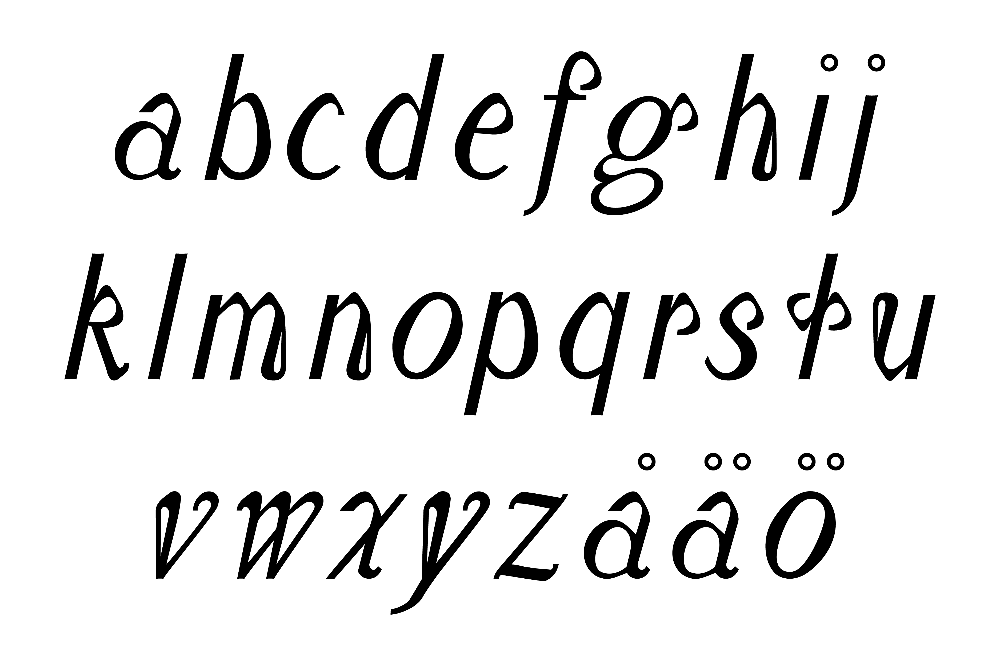
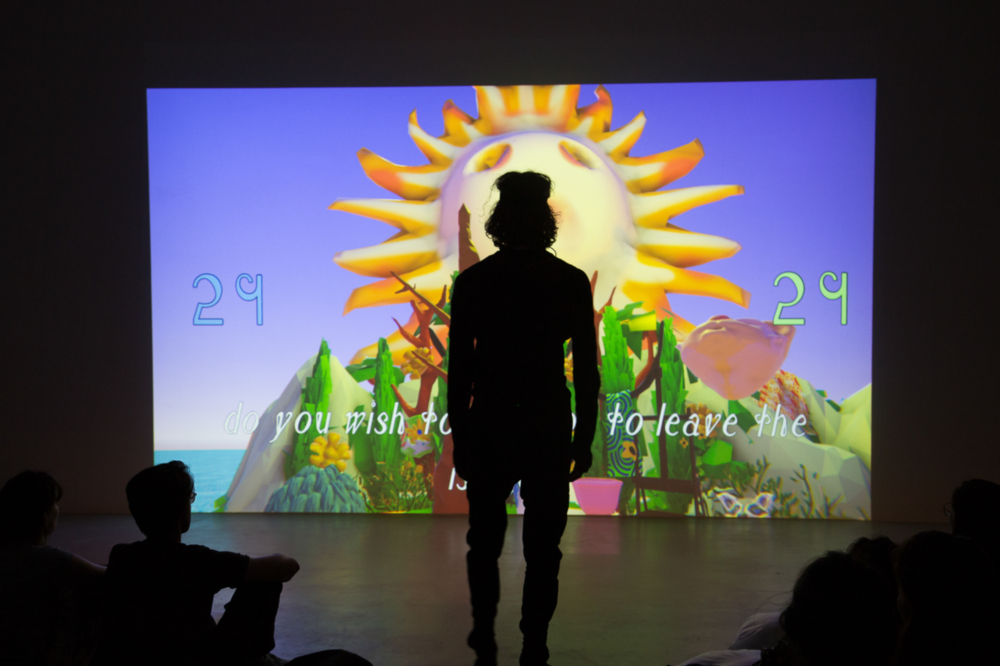
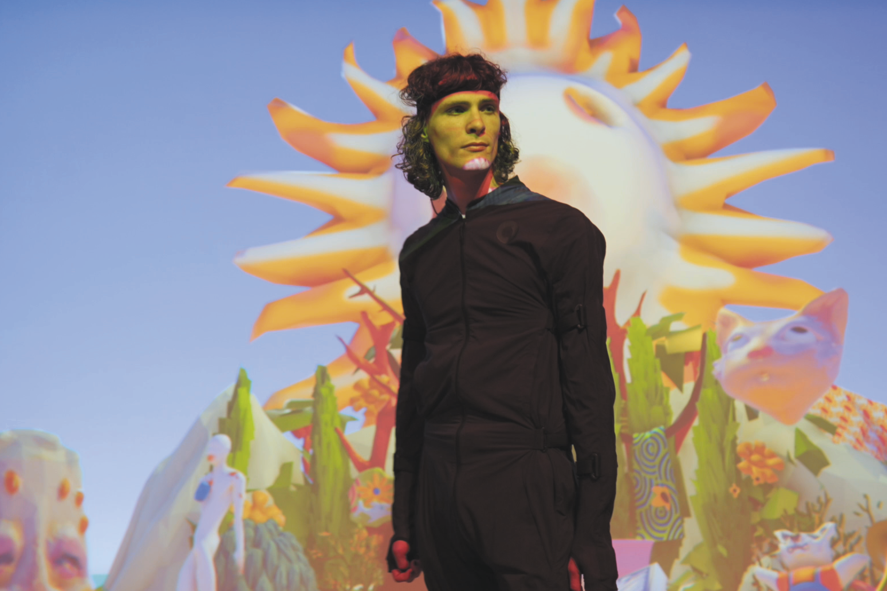

Mixed Reality Performance/Live Simulation 2023
Typer Ribs is a lower case adaptation of Typer Variable. A custom made typeface for the interactive mixed-reality performance "The Great Idle" by Benjamin Pompe, exhibited at IMPAKT [center for media culture] in Utrecht, Netherlands.
"In the context of contemporary technology and our online life, The Great Idle aspires to explore parallel dilemma’s to those raised by this ancient mythological tale. What do we decide to do with our free time? And how does idleness look, sound, feel?"
The typeface emanates from Typer Variable, adding a slant, made solely in lower case, condensing the width of the glyph and repeating a distinguishing shape that takes inspiration from bone like structure. Hence also giving the typeface its name.
To project trailer →
Typeface Design: Kristin Sandström
Artist: Benjamin Pompe
Performer: Lide Groutars
Sound design & Software: Nathan Marcus






